×
Никого не забыл · саммари созвона
Ролик на 20 секунд для Авито Товаров. Перед праздниками у всех в автобусе голова открывается крышкой и из неё вылетают подарки. Хватамба превращает мысли в покупки.
Ролик на 20 секунд для Авито Товаров. Перед праздниками у всех в автобусе голова открывается крышкой и из неё вылетают подарки. Хватамба превращает мысли в покупки.
Анимационные тесты по готовым кейфреймам. Полный ролик на этом этапе не собираем: для клиента достаточно анимированных шотов.
Показать клиенту уровень качества: работу с камерой и светом, поведение объектов, управляемость и пластику кадра. Тесты — аргумент для следующего этапа.
Заходы смотрим раньше. Сдача тритмента и тестов — во вторник 24.11 с утра.
Кейфреймы и бордоматик на 20 секунд. Хрон истории берём из бордоматика, по нему же сверяем скорости и ускорения. Хайрезы стилов — в чате с файлами.
Клиент может попросить поменять лица и убрать лишнюю экспрессию. Раскадровку не переносим в стиль один к одному: дополнительные шоты расписываем отдельно и добавляем в них киношности, в первую очередь работы с камерой.
Не фотореализм, но эмоции, камера, пластика кадра и линза чуть более настоящие, чем обычно в рекламе. Нестандартные ракурсы помогают уйти от попсовости сценария.
Сейчас выглядит наигранно и немного жутко. Нужен более естественный вариант.
В кадре с девушкой стекло потеет от её дыхания, пока она мечтает. Другой вариант — стекло запотело ещё до начала кадра.
История монтажная, поэтому шот можно начинать с середины действия. Например, голова героя уже открыта или только открывается, часть предметов висит в воздухе, часть ещё подлетает.
По задумке желания-предметы вылетают и из её головы. На текущем кадре вещи её облепили, вариант с открытой головой будет отдельно.
На общих планах детали не должны слипаться: клиент на это смотрит. Варианты решения: ракурс без проработки заднего плана, дефокус фона, детальный передний план, работа с глубиной резкости.
Берём готовые кадры, дотягиваем качество там, где нужно (детали, дефокус), и делаем сильные анимационные тесты. Это ещё не финал, правки от клиента будут.
Хрон задан бордоматиком, остальное решаем сами.
В понедельник Антон летит в Бангкок, разница с нами около 7 часов. Материалы можно присылать с утра, в субботу и воскресенье тоже. Если нужно, созваниваемся.
Таймкоды — по записи созвона.
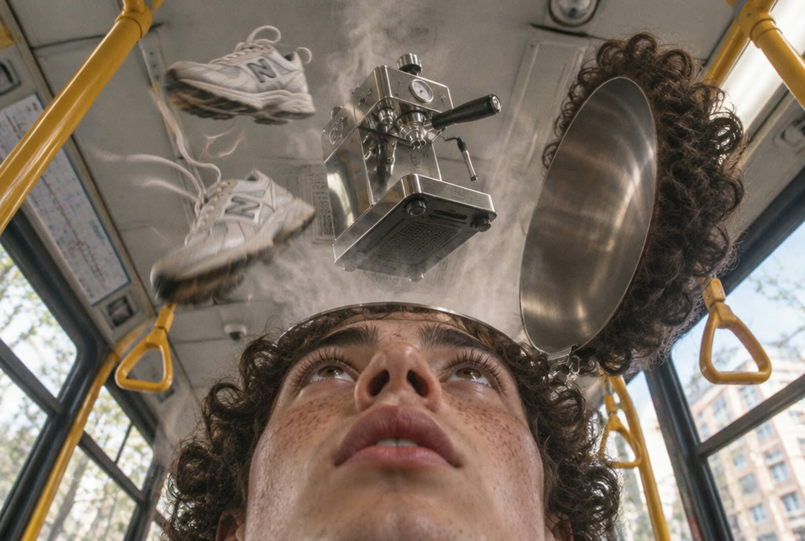
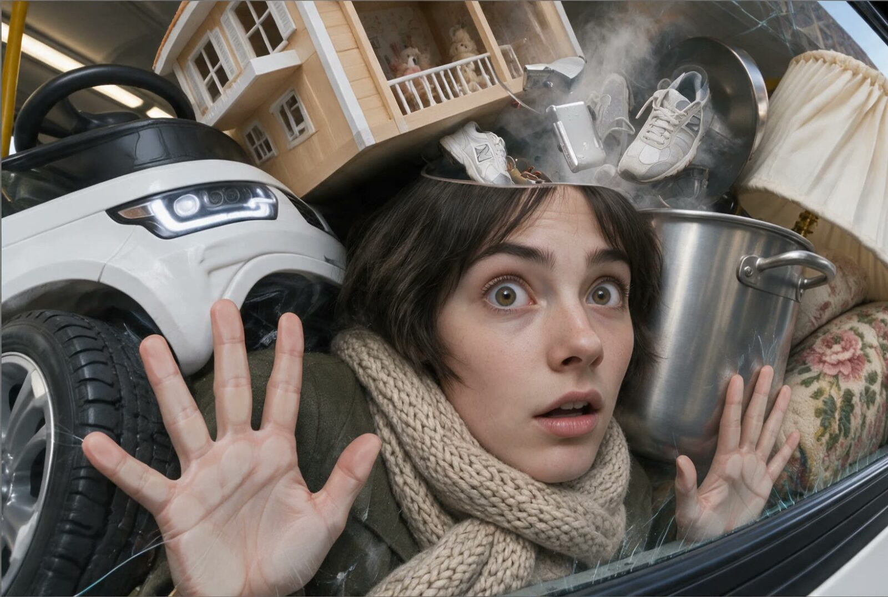
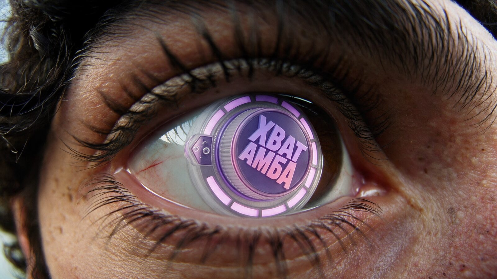
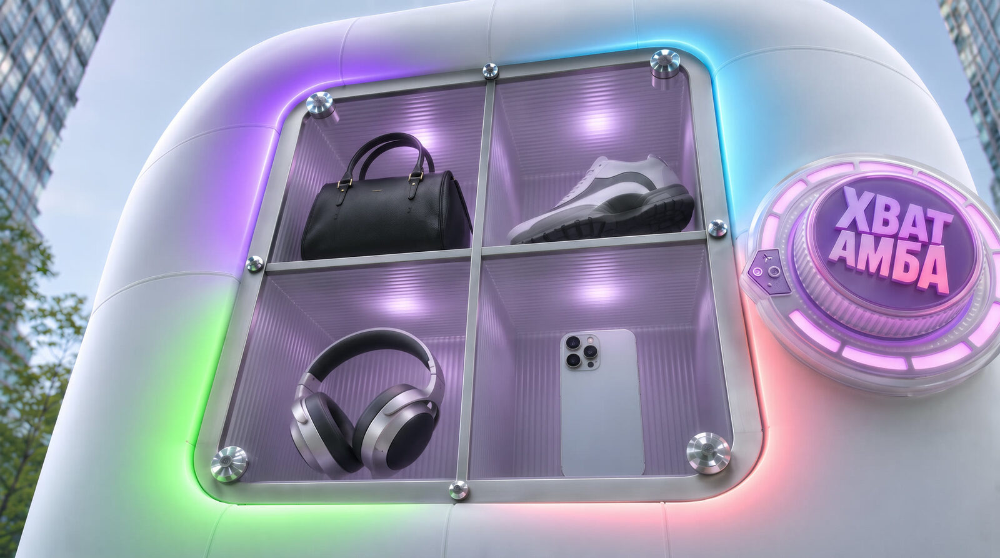
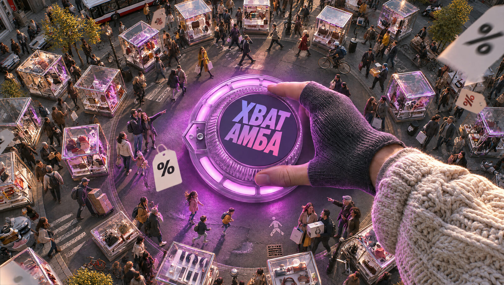
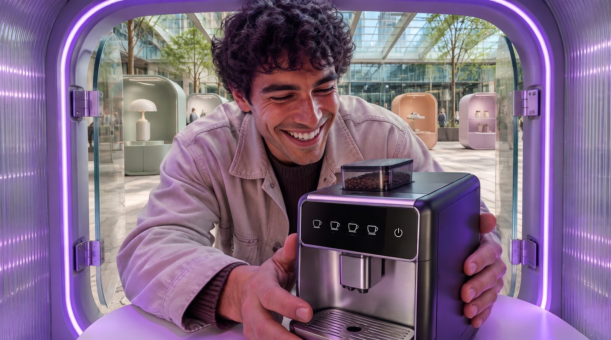
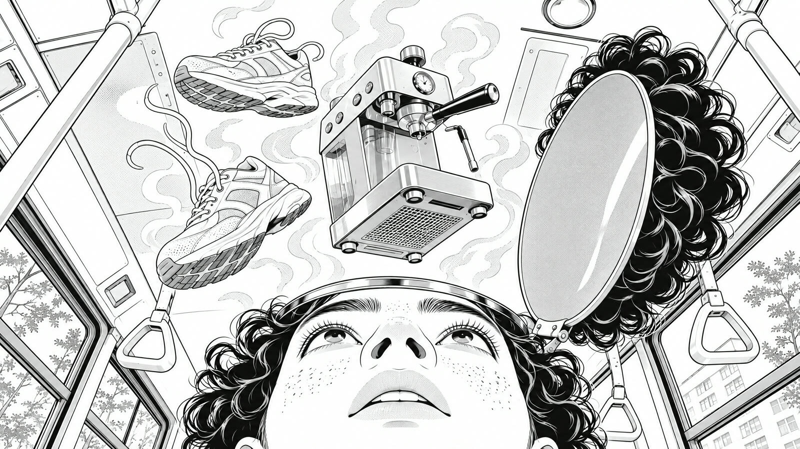
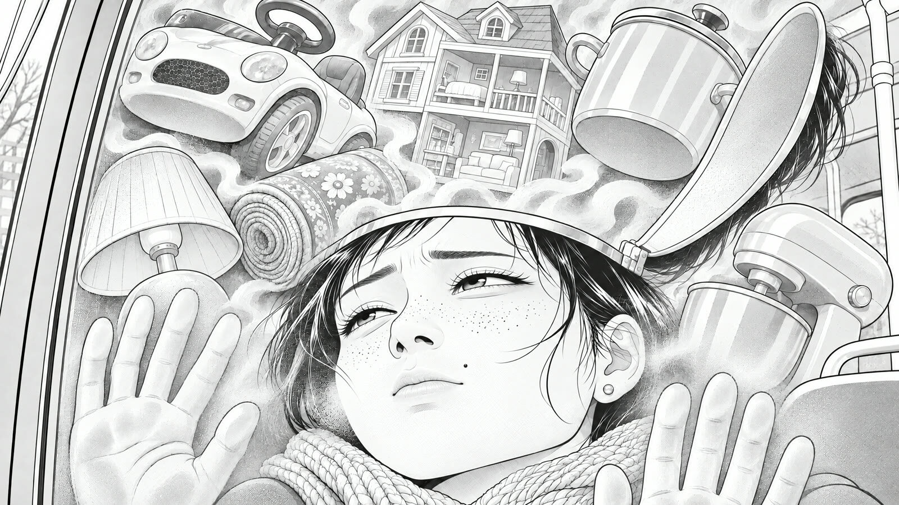
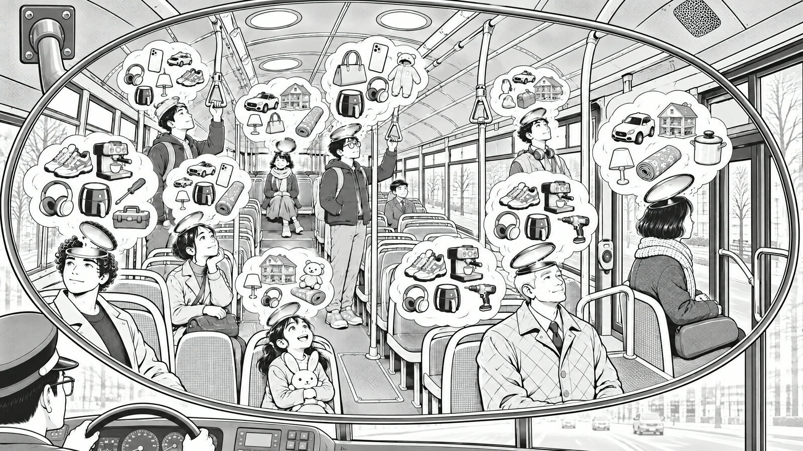
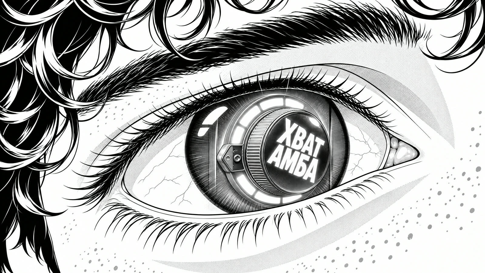
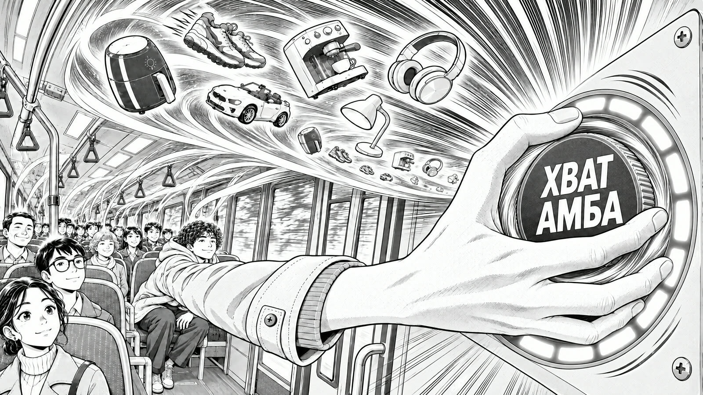
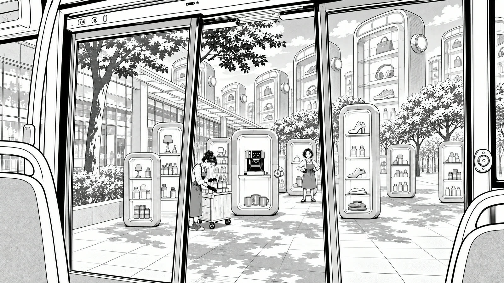
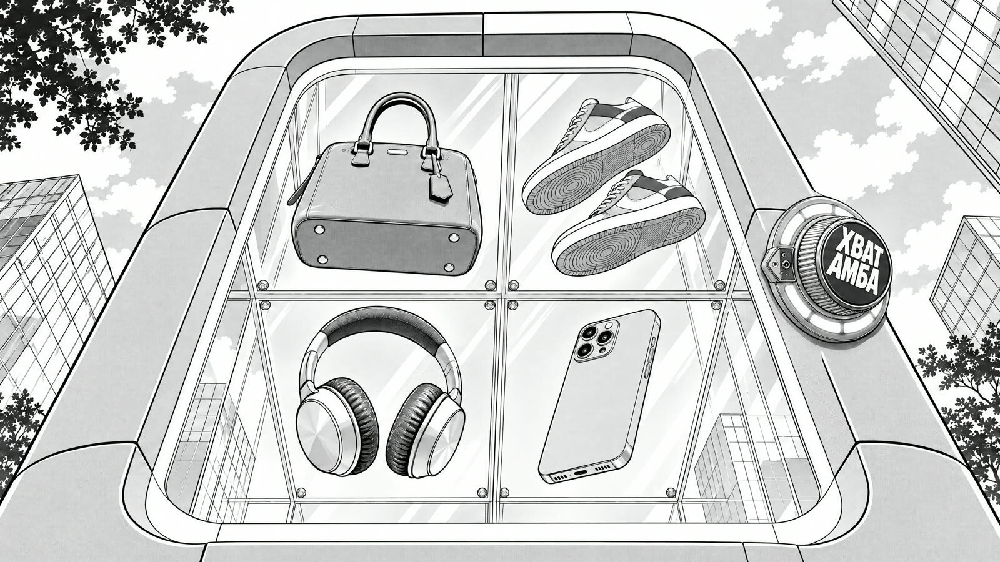
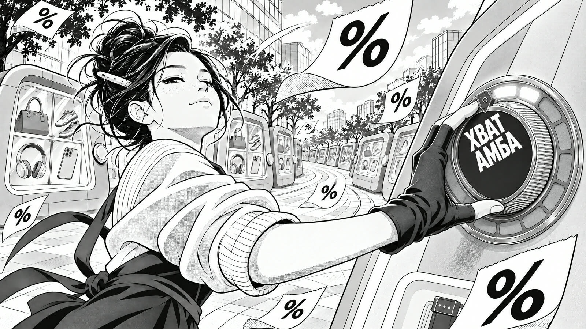
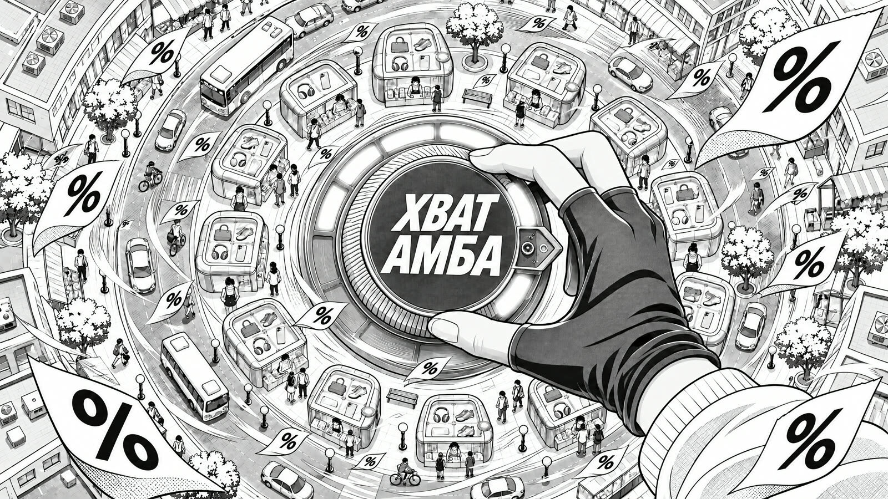
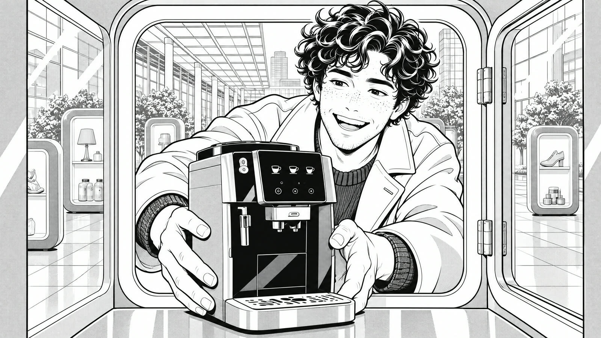
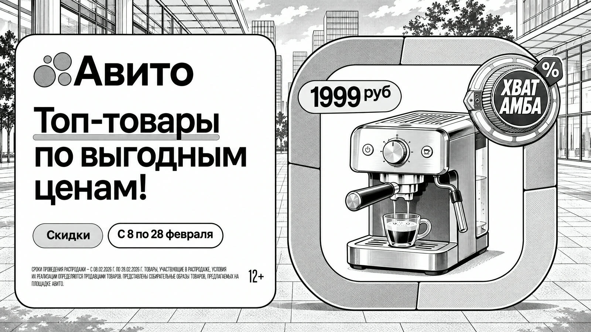
Режиссёрская дека: shavkero.com/deck/avito